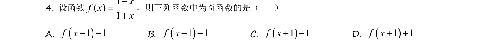
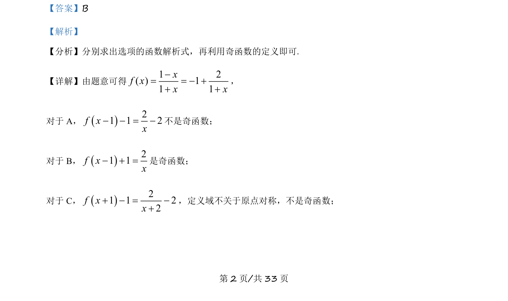
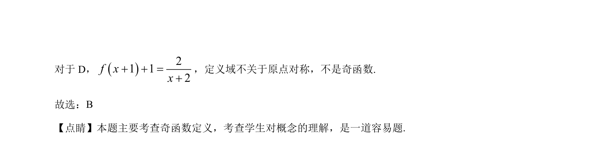

考点：奇函数性质 定义域对称性

本题通过解析式判断函数奇偶性，结合定义域对称性筛选选项。


📄 原 PDF 第 2 页：
素材/真题/吉林/2008-2024·（吉林）数学高考真题/2021年高考数学试卷（理）（全国乙卷）（新课标Ⅰ）（解析卷）.pdf
【答案】B 【解析】 【分析】分别求出选项的函数解析式，再利用奇函数的定义即可. 【详解】由题意可得1 2( ) 11 1xf xx x-= = - ++ + ， 对于 A，21 1 2f xx- - = -不是奇函数； 对于 B，21 1f xx- =+是奇函数； 对于 C，21 1 22f xx+ - = -+ ，定义域不关于原点对称，不是奇函数；